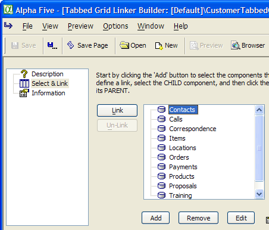
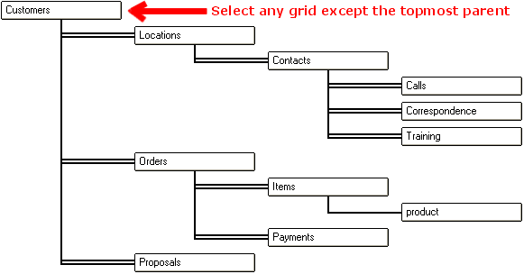
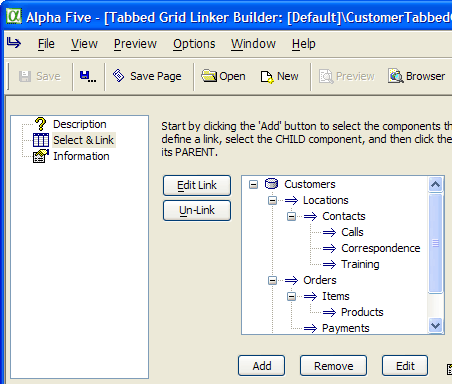
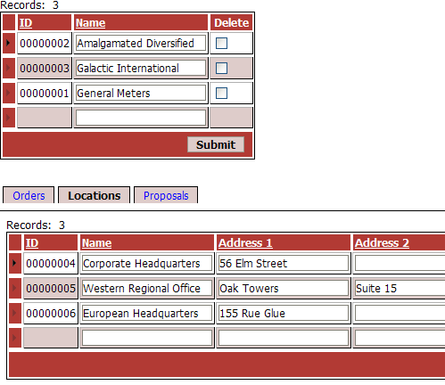
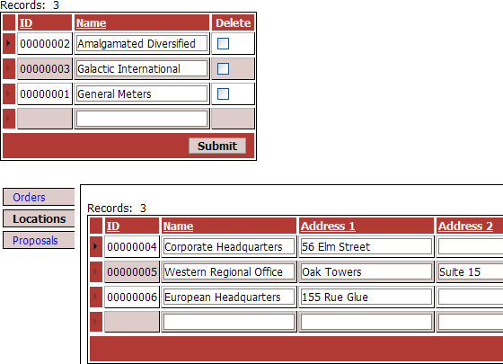

Creating Tabbed GridLinker Components
A GridLinker component is a device for combining two or more grids that are related to each other into a single container for placement in an .A5W page. The presumption is that the tables displayed in the different grids have a parent-child or parent-child-grandchild relationship.
When you select a (parent) record in a grid that has a child grid, you automatically reset the child grid to show only records linked to the parent grid. All components may have search and detail views.
A Tabbed GridLinker displays only one grid per level in the parent-child-grandchild relationship. Other grids that may be available at any level are represented by tabs. There are two benefits associated with the Tabbed GridLinker as compared to a regular GridLinker :
The user is presented with a less complex screen.
The design significantly improves performance by reducing the number of grids that must be refreshed at any moment.
The process of creating and using a tabbed gridlinker can be broken into these phases.
Create the grids that will be placed inside the tabbed gridlinker.
Create the tabbed gridlinker component.
Place the grid components into the tabbed gridlinker.
Place the tabbed gridlinker on an A5W page.
Publish the page containing the tabbed gridlinker.
 Note : If you place
the field that links parent table to child table on the child grid, this
field must be editable (the control type must
be TextBox ).
Note : If you place
the field that links parent table to child table on the child grid, this
field must be editable (the control type must
be TextBox ).
After you create all the component grids:
Click Web Projects to start the Web Projects Control Panel.
Click
 New on the toolbar.
New on the toolbar.Select Web Component and click Next >.
Select Tabbed Grid Linker and click OK.
Select the Select & Link page.
Use the Add button to display the Select Grid Component dialog and add grids (in any order) to the GridLinker.

When you have added all the grids you will need, select any grid except the topmost parent grid, and click Link.

In the resulting Link dialog box, select the Parent grid.
Select the Parent Linking Field and Child Linking Field. Both fields must be the same data type and size, then click OK. Repeat this process until you have defined all relationships.

To remove a grid, select it in the list and click Remove.
To edit a component, select the grid and click Launch Builder.
To change one of the properties of a grid in the GridLinker, select the grid and click Edit to display the Edit Properties dialog.
Click Component to select a replacement component. Note that it must have the same linking fields.
Click Alias to change a component's alias. This is the name that the GridLinker uses to identify the component.
Click Alias to change a component's properties in the Override Properties dialog box. Copy the line you want to modify from the Existing Properties tab to the Override Properties tab, then modify the value to the right of the equals "=" sign.
Select the topmost parent grid.
Optionally, change the setting in the Grid Properties > Tab button position field. The options are:
"Top"
"Bottom"
"Left"
"Right"
Optionally, if you want to change the default design:
Select Grid Properties > Customize Page Layout.
Click
 in the Grid Properties > Page layout
template field to display the HTML Editor.
Refer to Editing a Tabbed GridLinker Template.
in the Grid Properties > Page layout
template field to display the HTML Editor.
Refer to Editing a Tabbed GridLinker Template.Select a grid from the Grid Properties > Initial child to display list.
Optionally, if you want to change the tab button template:
Select Grid Properties > Customize tab button template.
Edit the HTML code in the Grid Properties > Tab button template field. Refer to Editing a Tabbed GridLinker Button Template.
Optionally, de-select the Grid Properties > Auto-scroll to child Grid option. When selected, this option automatically scrolls to the bottom of the page to assure that the most recently opened grid is visible.
Repeat steps 1 to 6 for each of the other grids that has one or more child grids.
For each child grid define the tab labels.
The Grid Properties > Tab button (selected) field contains the HTML text and formatting to display when the tab is selected. For example: " Locations " sets the font color to blue and the size to 11 pt.
The Grid Properties > Tab button (not selected) field contains the HTML text and formatting to display when the tab is selected. For example: " Locations " sets the font color to black the size to 10 pt.
The Grid Properties > Tab order field contains a number that defines the relative position of the tab from left to right (or top to bottom). The number can be any integer. The lowest number is at left (or on top). The highest number is at right (or on bottom).
The following picture shows two levels of a tabbed GridLinker with tabs on top.

The following picture shows two levels of a Tabbed GridLinker with tabs on the left.

See Also
Creating GridLinker Components, Creating a Grid Component, Editing a Tabbed GridLinker Button Template, Editing a Tabbed GridLinker Template
Supported By
Alpha Five Version 7 and Above
Limitations
Web publishing applications only. Deprecated in Version 10 and later.